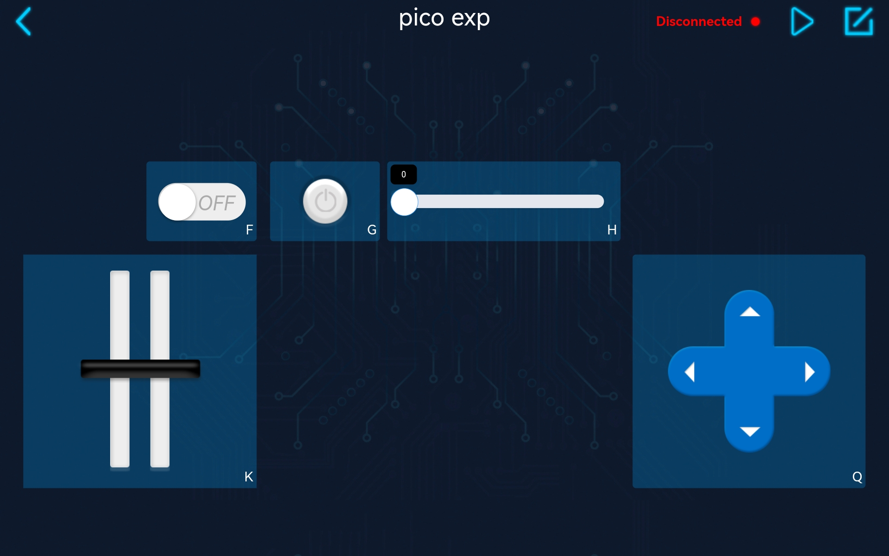
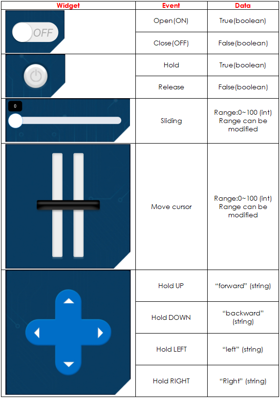

Note
Hello, welcome to the SunFounder Raspberry Pi & Arduino & ESP32 Enthusiasts Community on Facebook! Dive deeper into Raspberry Pi, Arduino, and ESP32 with fellow enthusiasts.
Why Join?
Expert Support: Solve post-sale issues and technical challenges with help from our community and team.
Learn & Share: Exchange tips and tutorials to enhance your skills.
Exclusive Previews: Get early access to new product announcements and sneak peeks.
Special Discounts: Enjoy exclusive discounts on our newest products.
Festive Promotions and Giveaways: Take part in giveaways and holiday promotions.
👉 Ready to explore and create with us? Click [here] and join today!
1.5 APP Actuator Widgets¶
Create a new controller and add the following widgets.

Run
1.5_ws_actuator.py.Note
Open the
1.5_ws_actuator.pyfile under the path ofeuler-kit/esp8266or copy this code into Thonny, then click “Run Current Script” or simply press F5 to run it.Don’t forget to click on the “MicroPython (Raspberry Pi Pico)” interpreter in the bottom right corner.
For detailed tutorials, please refer to Open and Run Code Directly.
Each time you rerun the code, you need to connect your device’s Wi-Fi to
my_esp8266, then turn on SunFounder Controller and reconnect.After clicking the Run/Stop button, you can try to toggle these widgets and you can see the corresponding value changes in the Thonny shell.
Widget List
